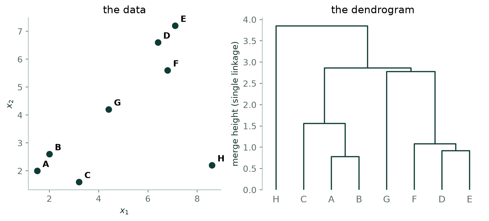
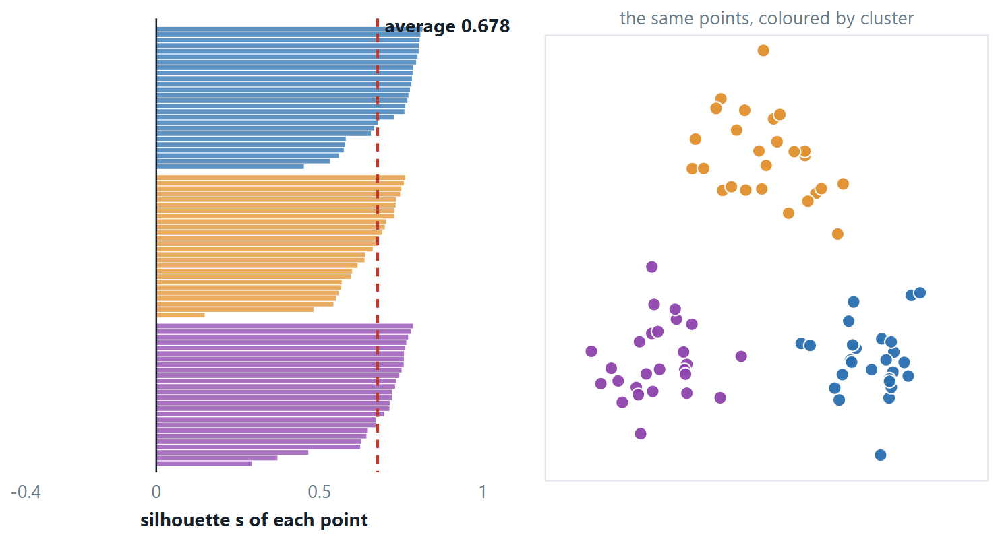
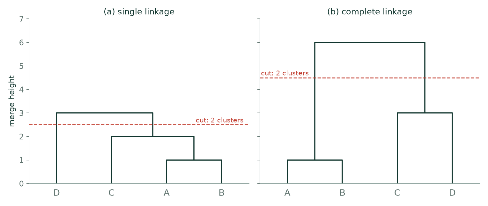

Chapter 14: Hierarchical Clustering and Evaluating Clusters¶
K-means needs the number of clusters in advance and produces a single flat partition. Hierarchical clustering produces a whole tree of nested partitions and leaves the choice of the number of clusters until afterwards. This chapter builds that tree by hand, compares the linkage rules, and then returns to the question that unsupervised learning makes hard: how do you know whether a clustering is any good, when there are no labels to check against?
14.1 Hierarchical clustering¶
Instead of committing to a number of clusters, build the whole family of them at once. Start with every point in its own cluster, repeatedly merge the closest pair, and record the height at which each merge happened. The result is a tree — a dendrogram — and cutting it horizontally at any height gives a clustering. Cut low for many small clusters, high for a few large ones. You never had to choose \(k\) in advance; you choose it afterwards, by looking.
Definition: Agglomerative clustering
- Every point is its own cluster.
- Merge the two closest clusters, where “closest” is defined by the linkage.
- Recompute distances from the new cluster to the rest.
- Repeat until one cluster remains.
Divisive clustering goes the other way — start with everything together and split repeatedly — and is far less used, because the first split requires searching over exponentially many ways to divide the data.

| Linkage | Distance between clusters | Produces | Weakness |
|---|---|---|---|
| Single | the closest pair, min | long, curved, non-convex shapes | chaining — a thin line of noise joins two separate groups |
| Complete | the farthest pair, max | compact, roughly equal-diameter clusters | a single outlier can hold a merge back |
| Average | the mean over all pairs | a compromise; the usual default | no strong shape preference either way |
| Ward | the merge that increases WCSS least | similar-sized spherical clusters | assumes Euclidean distance |
Reading a dendrogram
The height of a join is the distance at which it happened, so a join high above everything else means two genuinely dissimilar groups were finally forced together. Cutting horizontally gives a clustering, and the number of clusters is the number of vertical lines the cut crosses. The natural place to cut is just below the largest vertical gap — the biggest jump in merge distance — which is the hierarchical analogue of the elbow.
# hierarchical clustering, and the dendrogram behind it
from sklearn.cluster import AgglomerativeClustering
from scipy.cluster.hierarchy import linkage, dendrogram, fcluster
for how in ["single", "complete", "average", "ward"]:
lab = AgglomerativeClustering(n_clusters=3, linkage=how).fit_predict(Xs)
print(how, round(silhouette_score(Xs, lab), 3)) # four linkages, four answers
Z = linkage(Xs, method="ward") # the merge history: [a, b, height, size]
dendrogram(Z, truncate_mode="lastp", p=12)
labels = fcluster(Z, t=3, criterion="maxclust") # cut the tree into a clustering
The Z matrix is the dendrogram: one row per merge, giving the two clusters joined and the height at which they joined. Everything the figure above draws is in those four columns.
14.2 Evaluating a clustering¶
There is no accuracy, because there is nothing to be accurate against. Two families of measure exist, and they answer different questions.
Internal
— computed from the data and the clustering alone. WCSS for comparing runs at the same \(k\); the silhouette coefficient; the Davies–Bouldin index (lower is better) and the Calinski–Harabasz score (higher is better), both of which compare within-cluster spread against between-cluster separation.
External
— used when labels do exist, typically to test a clustering algorithm rather than to solve a problem. The Rand index and adjusted Rand index count pairs of points that the clustering and the labels agree about; normalised mutual information measures shared information; purity asks what fraction of each cluster belongs to its most common true class.

The plot says more than the single number does. A cluster whose bars are uniformly long is real; one whose bars are short and ragged is a group the algorithm invented to satisfy \(k\); and a negative bar names an individual point that is on average closer to a cluster it was not put in.
Clustering algorithms always return clusters
Run k-means with \(k = 4\) on uniform random noise and you will get four tidy groups with a respectable WCSS. Nothing in the algorithm can tell you that there was no structure to find. That is what the gap statistic tests for, and it is why a clustering result should always be sanity-checked — by plotting it, by looking at cluster profiles, or by asking somebody who knows the domain whether the groups mean anything.
Where clustering earns its place¶
- Customer segmentation. Group by purchase behaviour, then design a campaign per segment. The classic RFM features — recency, frequency, monetary value — need standardising first, because monetary value runs to five figures and frequency to one.
- Image compression. Cluster the pixel colours into \(k = 16\) groups and store each pixel as a 4-bit cluster index plus a small palette. A 24-bit-per-pixel image becomes 4 bits per pixel, a sixfold saving, and this is exactly k-means with three features.
- Document grouping. Cluster news articles into topics with cosine distance on TF-IDF vectors — the one place where Euclidean distance is clearly the wrong choice, because it would separate a long article from a short one on the same subject.
- Gene expression. Group genes with similar expression profiles across conditions; hierarchical clustering with a heat map is the standard presentation, and the dendrogram itself is part of the result.
- Anomaly detection. Points far from every centroid, or left as singletons late in a dendrogram, are candidates for anomalies — unsupervised detection where no labelled examples of the fault exist.
- Preprocessing for a supervised model. A cluster label can be a feature. Vector quantisation, and semi-supervised labelling where one member of each cluster is labelled by hand and the label is propagated.
14.3 Further topics¶
Ward's linkage, worked through¶
Ward's linkage defines the distance between two clusters as the increase in total WCSS that merging them would cause. For clusters of sizes \(n_{a}\) and \(n_{b}\) with means \(\mu_{a}\) and \(\mu_{b}\) that increase has a closed form,
so two clusters are close if their means are close and small clusters are cheaper to absorb than large ones. At each step Ward merges the pair with the smallest \(\Delta\).
Take the four points \(P(1), Q(2), R(5), S(9)\). Merging two single points \(P\) and \(Q\) costs \(\tfrac{1 \cdot 1}{2}(1)^{2} = 0.5\). Then \(\{P,Q\}\) (mean \(1.5\)) with \(R\) costs \(\tfrac{2 \cdot 1}{3}(3.5)^{2} = 8.17\), and \(R\) with \(S\) costs \(\tfrac{1 \cdot 1}{2}(4)^{2} = 8\), which is smaller, so \(\{R, S\}\) forms. The last merge, \(\{P,Q\}\) (mean \(1.5\)) with \(\{R,S\}\) (mean \(7\)), costs \(\tfrac{2 \cdot 2}{4}(5.5)^{2} = 30.25\). The three costs add up to \(0.5 + 8 + 30.25 = 38.75\), which is exactly the WCSS of all four points about their overall mean, \(4.25\), because the tree starts from singletons with WCSS zero and each merge adds its \(\Delta\). The two-cluster cut is \(\{P, Q\}\) and \(\{R, S\}\), a different answer from the single-linkage cut \(\{P, Q, R\}\) and \(\{S\}\) on the same points.
Libraries report the height of a Ward merge as \(\sqrt{2\Delta}\), so that heights are on the scale of a distance. The values for this example are \(1\), \(4\) and \(7.78\), and it is the order of the merges, not the scale, that defines the tree. Ward's linkage is the right default when the clusters are expected to be compact and of similar size, and it requires the Euclidean distance, since \(\Delta\) is derived from squared Euclidean distances.
Divisive clustering¶
Divisive clustering runs the dendrogram in the other direction. All the points start in one cluster, and at each step one cluster is split in two, until every point is alone. To split a cluster optimally one would examine every way of dividing \(m\) points into two non-empty sets, and there are \(2^{m-1} - 1\) of them, which is hopeless beyond a few dozen points. Practical divisive methods therefore split heuristically, and the commonest is bisecting k-means: split the cluster with the largest WCSS (the least cohesive) using 2-means, and repeat.
For the same four points \(\{1, 2, 5, 9\}\) there are \(2^{3} - 1 = 7\) ways to make a first split, and the one with the smallest total WCSS is \(\{1, 2\}\) and \(\{5, 9\}\), with WCSS \(0.5 + 8 = 8.5\). The cluster \(\{5, 9\}\) is then split into its two points, and \(\{1, 2\}\) likewise. The first split reduces the WCSS from \(38.75\) to \(8.5\), a drop of \(30.25\): the same quantity as the last Ward merge, seen from the top. The advantages of working top-down are that one can stop after a few splits without ever building the bottom of the tree, and that the first splits are decided with the whole data in view. The disadvantage is cost, and the fact that, like agglomerative merging, a split is never reconsidered.
What the greedy methods cannot undo¶
K-means moves points between clusters on every iteration, and so can repair an early mistake. Agglomerative clustering cannot: once two clusters are merged they stay merged for every coarser cut, and a divisive split is permanent in the same way. If an early merge is wrong, the error is carried upward through the whole tree. This is the price of a deterministic algorithm and of a result that contains every number of clusters at once.
The memory cost is the other limit. A distance matrix on \(m\) points holds \(m(m-1)/2\) entries, which is \(1770\) for \(60\) points but of the order of \(10^{13}\) for five million, and merging \(m\) points one pair at a time needs about \(m\) steps that each look at that matrix. That is why agglomerative clustering is used on samples of thousands, not millions, of points; a common practice is to run k-means with many clusters to compress a large data set into centroids and then cluster the centroids hierarchically.
The Davies–Bouldin index¶
The Davies–Bouldin index scores a clustering by comparing, for each cluster, its spread against its separation from the most similar other cluster. Let \(s_{i}\) be the mean distance of the points in cluster \(i\) to its centroid, and \(d_{ij}\) the distance between the centroids of clusters \(i\) and \(j\). Then
A tight cluster far from every other has a small ratio, so lower is better, and a value near 0 means compact, well separated clusters. For the one-dimensional clustering \(\{1, 2, 3\}\), \(\{9, 10\}\), \(\{20\}\) the centroids are \(2\), \(9.5\) and \(20\) and the spreads are \(s_{1} = (1 + 0 + 1)/3 = 0.667\), \(s_{2} = 0.5\) and \(s_{3} = 0\). The ratios are \((0.667 + 0.5)/7.5 = 0.156\) for clusters 1 and 2, \(0.667/18 = 0.037\) for 1 and 3, and \(0.5/10.5 = 0.048\) for 2 and 3, so the worst partner of cluster 1 is cluster 2 (0.156), of cluster 2 is cluster 1 (0.156), and of cluster 3 is cluster 2 (0.048). The index is \((0.156 + 0.156 + 0.048)/3 = 0.12\). Like the silhouette, it is computed from the data and the clustering alone, and like every internal index it is useful for comparing clusterings of the same data and not as a certificate that the clusters are real.
14.4 Worked examples¶
The examples below work through the calculations of this chapter in full. Try each one on paper before reading the steps.
Example 14.1: Agglomerative clustering by hand
Problem. Four points on a line: \(P(1), Q(2), R(5), S(9)\). Build the dendrogram under single linkage and under complete linkage, and give the two-cluster solution in each case.
Step 1 — the distance matrix
| \(P\) | \(Q\) | \(R\) | \(S\) | |
|---|---|---|---|---|
| \(P\) | 0 | 1 | 4 | 8 |
| \(Q\) | 1 | 0 | 3 | 7 |
| \(R\) | 4 | 3 | 0 | 4 |
| \(S\) | 8 | 7 | 4 | 0 |
The smallest entry is 1, so \(P\) and \(Q\) merge first at height 1 under any linkage — with singletons, every linkage agrees.
Step 2 — single linkage
d({P,Q}, \(R) = \min(4, 3) = 3 \cdot\) d({P,Q}, \(S) = \min(8, 7) = 7 \cdot d(R, S) = 4\)
Smallest is 3, so {P,Q} merges with \(R\) at height 3.
Then d({P,Q,R}, \(S) = \min(8, 7, 4) = 4\), so \(S\) joins at height 4.
Two-cluster solution (cut just below 4): {P, \(Q\), R} and {S}.
Step 3 — complete linkage
d({P,Q}, \(R) = \max(4, 3) = 4 \cdot\) d({P,Q}, \(S) = \max(8, 7) = 8 \cdot d(R, S) = 4\)
There is a tie at 4. Take \(R\) and \(S\): {R,S} merges at height 4.
Then d({P,Q}, {R,S}) \(= \max(4, 8, 3, 7) = 8\), so everything joins at height 8.
Two-cluster solution: {P, Q} and {R, S}.
Answer. Single linkage gives {P,Q,R} and {S}. Complete linkage gives {P,Q} and {R,S}. Same data, same distances, different answer.
Comment. Single linkage grew a chain P–Q–R because each successive link was short, even though \(P\) and \(R\) are 4 apart. Complete linkage refused, because it insists every member be close to every other, and it preferred to pair \(R\) with \(S\). Neither is wrong — but you must say which you used, because the result is meaningless without it.
Example 14.2: Silhouette for one point
Problem. Point \(x\) is in cluster A with two others, at distances 1 and 3. The nearest other cluster B has three members at distances 5, 6 and 7. Compute the silhouette coefficient for \(x\) and interpret it.
Step 1 — a, the cohesion
\(a =\) mean distance to the other members of its own cluster \(= (1 + 3)/2 = 2\). Note \(x\) itself is not counted.
Step 2 — \(b\), the separation
\(b =\) mean distance to all members of the nearest other cluster \(= (5 + 6 + 7)/3 = 6\)
Step 3 — combine
\(s = (b -\) a)/max(a, \(b) = (6 - 2)/6 = 4/6 = 0.667\)
Step 4 — interpret
+0.667 is comfortably positive: \(x\) is three times closer to its own cluster than to the next one, so it is well placed. Values above about 0.5 are generally read as a strong assignment, near 0 as borderline, and negative as misassigned — which happens when \(b < a\), meaning the point is on average nearer to a cluster it does not belong to.
Averaging \(s\) over every point scores the whole clustering, and that average can be maximised over \(k\), which is exactly what WCSS cannot do.
Answer. \(s = 0.667\) — a well-assigned point.
Example 14.3: Diagnose four failed clusterings
Problem. For each situation, name the problem and give the remedy. (a) Two runs of k-means with \(k = 4\) give quite different results. \((b)\) The data is two interlocking crescents and k-means slices both in half. \((c)\) One cluster contains a single point. \((d)\) The clustering appears to be driven entirely by annual income.
(a) Different results each run
Local optima. Lloyd's algorithm converges to a partition determined by where the centroids started. Remedy: run it 10 times with different seeds and keep the lowest WCSS, and use k-means++ so the starts are spread out. scikit-learn's n_init=10 does exactly this by default.
\((b)\) Crescents cut in half
Wrong algorithm, not wrong parameters. k-means assigns each point to the nearest centroid, so its boundaries are perpendicular bisectors — straight lines — and its clusters are convex. A crescent is not convex, so no \(k\) and no initialisation will fix it. Remedy: DBSCAN, spectral clustering, or single-linkage hierarchical, all of which can follow a curved shape.
(c) A cluster of one
An outlier has captured a centroid. Squared distance is dominated by the far-away point, so giving it its own cluster lowers WCSS more than anything else available. Remedy: remove or cap outliers first, or use k-medoids, whose centres must be actual data points and which minimises absolute rather than squared distance.
\((d)\) One feature dominates
Unscaled features. Income runs to \(10^{5}\) and age to \(10^{1}\), so the income term is about \(10^{8}\) times larger in every squared distance and the other features contribute nothing. Remedy: standardise every feature before computing a single distance.
Answer. (a) local optima — restart with k-means++; \((b)\) wrong algorithm — use DBSCAN or spectral; \((c)\) an outlier — remove it or use k-medoids; \((d)\) unscaled features — standardise.
Example 14.4: The same distance matrix, two linkages, two different trees
Problem. Four points have the distance matrix below. Build the agglomerative clustering under single linkage and under complete linkage, give the merge heights, and cut each tree into two clusters.
| A | B | C | D | |
|---|---|---|---|---|
| A | 0 | 1 | 4 | 5 |
| B | 1 | 0 | 2 | 6 |
| C | 4 | 2 | 0 | 3 |
| D | 5 | 6 | 3 | 0 |
Step 1 — the first merge, the same for both
The smallest entry is \(d(A, B) = 1\), so \(\{A, B\}\) forms at height 1 under either linkage.
Step 2 — single linkage (cluster distance is the minimum)
\(d(\{A,B\}, C) = \min(4, 2) = 2\), \(\quad d(\{A,B\}, D) = \min(5, 6) = 5\), \(\quad d(C, D) = 3\)
The smallest is 2, so \(C\) joins \(\{A, B\}\) at height 2. Then \(d(\{A,B,C\}, D) = \min(5, 3) = 3\), and \(D\) joins at height 3.
The tree is \((((A,B),C),D)\) with heights \(1, 2, 3\). A cut between 2 and 3 gives \(\{A, B, C\}\) and \(\{D\}\).
Step 3 — complete linkage (cluster distance is the maximum)
\(d(\{A,B\}, C) = \max(4, 2) = 4\), \(\quad d(\{A,B\}, D) = \max(5, 6) = 6\), \(\quad d(C, D) = 3\)
The smallest is now \(d(C, D) = 3\), so \(\{C, D\}\) forms at height 3. Then \(d(\{A,B\}, \{C,D\}) = \max(4, 5, 2, 6) = 6\), and the two pairs join at height 6.
The tree is \(((A,B),(C,D))\) with heights \(1, 3, 6\). A cut between 3 and 6 gives \(\{A, B\}\) and \(\{C, D\}\).

Answer. Single linkage: heights \(1, 2, 3\), two clusters \(\{A,B,C\}\) and \(\{D\}\). Complete linkage: heights \(1, 3, 6\), two clusters \(\{A,B\}\) and \(\{C,D\}\).
Comment. The disagreement is in the second merge. Single linkage looked only at the nearest pair, \(B\) and \(C\) at distance 2, and so attached \(C\) to \(\{A, B\}\) even though \(A\) and \(C\) are 4 apart. Complete linkage asked for the farthest pair, saw that \(C\) would then be 4 from \(A\) and only 3 from \(D\), and refused. The top merge heights, 3 and 6, also differ by a factor of 2, so heights from different linkages must never be compared.
Example 14.5: Single, complete and average linkage on five points
Problem. Five points have the distance matrix below. Give the merge order and heights under single, complete and average linkage.
| P | Q | R | S | T | |
|---|---|---|---|---|---|
| P | 0 | 2 | 6 | 10 | 9 |
| Q | 2 | 0 | 5 | 9 | 8 |
| R | 6 | 5 | 0 | 4 | 5 |
| S | 10 | 9 | 4 | 0 | 3 |
| T | 9 | 8 | 5 | 3 | 0 |
Step 1 — the two merges all linkages agree on
The smallest entry is \(d(P, Q) = 2\), so \(\{P, Q\}\) forms at height 2. Of the rest, \(d(S, T) = 3\) is smallest, so \(\{S, T\}\) forms at height 3. Singleton distances do not depend on the linkage.
Step 2 — where \(R\) goes
The distances from \(R\) to the other clusters are:
| to \(\{P,Q\}\) | to \(\{S,T\}\) | |
|---|---|---|
| single (min) | \(\min(6, 5) = 5\) | \(\min(4, 5) = 4\) |
| complete (max) | \(\max(6, 5) = 6\) | \(\max(4, 5) = 5\) |
| average | \((6 + 5)/2 = 5.5\) | \((4 + 5)/2 = 4.5\) |
Under each linkage \(R\) is nearest to \(\{S, T\}\), so it joins them at height 4 (single), 5 (complete) or 4.5 (average). The distance between \(\{P, Q\}\) and \(\{S, T\}\) is at least 8 under every linkage, so it is not the smaller one.
Step 3 — the final merge
\(\{P, Q\}\) joins \(\{R, S, T\}\). The six cross distances are \(d(P,R) = 6\), \(d(P,S) = 10\), \(d(P,T) = 9\), \(d(Q,R) = 5\), \(d(Q,S) = 9\), \(d(Q,T) = 8\).
Single: the minimum, \(5\). Complete: the maximum, \(10\). Average: \((6 + 10 + 9 + 5 + 9 + 8)/6 = 47/6 = 7.83\).
Answer.
| linkage | merge 1 | merge 2 | merge 3 | merge 4 |
|---|---|---|---|---|
| single | \(PQ\) at 2 | \(ST\) at 3 | \(R\) joins \(ST\) at 4 | \(PQ\) joins \(RST\) at 5 |
| complete | \(PQ\) at 2 | \(ST\) at 3 | \(R\) joins \(ST\) at 5 | \(PQ\) joins \(RST\) at 10 |
| average | \(PQ\) at 2 | \(ST\) at 3 | \(R\) joins \(ST\) at 4.5 | \(PQ\) joins \(RST\) at 7.83 |
Comment. The merge order, and so the tree shape, is the same for all three; only the heights differ, and they are ordered single \(\le\) average \(\le\) complete in every row. That ordering always holds, because the minimum of a set of numbers is at most their mean, which is at most their maximum. A cut that yields two clusters gives \(\{P,Q\}\) and \(\{R,S,T\}\) in each case.
Example 14.6: Single linkage on points in the plane
Problem. Cluster \(A(1,2),\; B(2,1),\; C(4,4),\; D(5,4),\; E(2,5)\) by single linkage with Euclidean distance. Give the distance matrix, the merges with their heights, and the two-cluster solution.
Step 1 — the distance matrix
\(d(A,B) = \sqrt{1 + 1} = 1.414\), \(\quad d(A,C) = \sqrt{9 + 4} = 3.606\), \(\quad d(A,D) = \sqrt{16 + 4} = 4.472\), \(\quad d(A,E) = \sqrt{1 + 9} = 3.162\)
\(d(B,C) = \sqrt{4 + 9} = 3.606\), \(\quad d(B,D) = \sqrt{9 + 9} = 4.243\), \(\quad d(B,E) = \sqrt{0 + 16} = 4\)
\(d(C,D) = \sqrt{1 + 0} = 1\), \(\quad d(C,E) = \sqrt{4 + 1} = 2.236\), \(\quad d(D,E) = \sqrt{9 + 1} = 3.162\)
| A | B | C | D | E | |
|---|---|---|---|---|---|
| A | 0 | 1.414 | 3.606 | 4.472 | 3.162 |
| B | 1.414 | 0 | 3.606 | 4.243 | 4 |
| C | 3.606 | 3.606 | 0 | 1 | 2.236 |
| D | 4.472 | 4.243 | 1 | 0 | 3.162 |
| E | 3.162 | 4 | 2.236 | 3.162 | 0 |
Step 2 — merge \(C\) and \(D\)
The smallest entry is \(d(C, D) = 1\), so \(\{C, D\}\) forms at height 1. The updated distances, each the smaller of two entries, are \(d(\{C,D\}, A) = \min(3.606, 4.472) = 3.606\), \(d(\{C,D\}, B) = \min(3.606, 4.243) = 3.606\) and \(d(\{C,D\}, E) = \min(2.236, 3.162) = 2.236\).
Step 3 — merge \(A\) and \(B\)
The smallest entry is now \(d(A, B) = 1.414\), so \(\{A, B\}\) forms at height 1.414. Then \(d(\{A,B\}, \{C,D\}) = \min(3.606, 3.606) = 3.606\) and \(d(\{A,B\}, E) = \min(3.162, 4) = 3.162\).
Step 4 — merge \(E\) into \(\{C, D\}\)
The smallest remaining is \(d(\{C,D\}, E) = 2.236\), so \(E\) joins \(\{C, D\}\) at height 2.236. Now \(d(\{A,B\}, \{C,D,E\}) = \min(3.606, 3.162) = 3.162\).
Step 5 — the last merge, and the cut
\(\{A, B\}\) joins \(\{C, D, E\}\) at height 3.162, the single link being \(A\) to \(E\). The merge heights are \(1,\ 1.414,\ 2.236,\ 3.162\). A cut between 2.236 and 3.162 crosses two branches.
Answer. Two clusters: \(\{A, B\}\) and \(\{C, D, E\}\). Merge heights \(1,\ 1.414,\ 2.236,\ 3.162\).
Comment. The last link is \(A\) to \(E\), at \(3.162\), not the larger \(3.606\) that connects both \(A\) and \(B\) to \(C\). Single linkage uses only the smallest cross distance, so a single pair of points, one from each side, decided how the two halves were joined.
Example 14.7: Reading the elbow from a table
Problem. Running k-means for several values of \(k\) gives the following WCSS. Use the elbow method to choose \(k\).
| \(k\) | 1 | 2 | 3 | 4 | 5 |
|---|---|---|---|---|---|
| WCSS | 500 | 220 | 90 | 75 | 65 |
Step 1 — the drop bought by each extra cluster
| step | drop | as a fraction of the previous WCSS |
|---|---|---|
| \(1 \to 2\) | \(500 - 220 = 280\) | \(280/500 = 56\%\) |
| \(2 \to 3\) | \(220 - 90 = 130\) | \(130/220 = 59\%\) |
| \(3 \to 4\) | \(90 - 75 = 15\) | \(15/90 = 17\%\) |
| \(4 \to 5\) | \(75 - 65 = 10\) | \(10/75 = 13\%\) |
Step 2 — find the bend
The first two extra clusters each cut the WCSS by more than half. After \(k = 3\) the gains drop abruptly to a handful of units and stay small. The curve bends at \(k = 3\).
Answer. \(k = 3\).
Comment. The elbow is a judgement, not a calculation: the evidence here is the sharp change between the second and third rows of the table. When the curve falls smoothly, with no visible bend, the elbow gives no answer, and the silhouette or the purpose of the analysis has to decide. The elbow also cannot confirm that the clusters are real; it only locates the point of diminishing returns.
Example 14.8: Average silhouette for a whole clustering
Problem. The six points \(1, 2, 3, 9, 10, 20\) on a line are clustered in two ways: \(k = 2\) gives \(\{1, 2, 3\}\) and \(\{9, 10, 20\}\), and \(k = 3\) gives \(\{1, 2, 3\}\), \(\{9, 10\}\) and \(\{20\}\). Compute the average silhouette of each and compare.
Step 1 — silhouettes for \(k = 2\)
For each point, \(a\) is its mean distance to the others in its own cluster, \(b\) is its mean distance to the other cluster, and \(s = (b - a)/\max(a, b)\).
| point | \(a\) | \(b\) | \(s\) |
|---|---|---|---|
| 1 | \((1+2)/2 = 1.5\) | \((8+9+19)/3 = 12\) | \(10.5/12 = 0.875\) |
| 2 | \((1+1)/2 = 1\) | \((7+8+18)/3 = 11\) | \(10/11 = 0.909\) |
| 3 | \((2+1)/2 = 1.5\) | \((6+7+17)/3 = 10\) | \(8.5/10 = 0.850\) |
| 9 | \((1+11)/2 = 6\) | \((8+7+6)/3 = 7\) | \(1/7 = 0.143\) |
| 10 | \((1+10)/2 = 5.5\) | \((9+8+7)/3 = 8\) | \(2.5/8 = 0.313\) |
| 20 | \((11+10)/2 = 10.5\) | \((19+18+17)/3 = 18\) | \(7.5/18 = 0.417\) |
The average is \((0.875 + 0.909 + 0.850 + 0.143 + 0.313 + 0.417)/6 = 3.506/6 = 0.584\).
Step 2 — silhouettes for \(k = 3\)
| point | \(a\) | \(b\) (nearest other cluster) | \(s\) |
|---|---|---|---|
| 1 | 1.5 | \((8+9)/2 = 8.5\) | \(7/8.5 = 0.824\) |
| 2 | 1 | \((7+8)/2 = 7.5\) | \(6.5/7.5 = 0.867\) |
| 3 | 1.5 | \((6+7)/2 = 6.5\) | \(5/6.5 = 0.769\) |
| 9 | 1 | \((8+7+6)/3 = 7\) | \(6/7 = 0.857\) |
| 10 | 1 | \((9+8+7)/3 = 8\) | \(7/8 = 0.875\) |
| 20 | undefined | \(0\) by convention |
For the point 9 the nearest other cluster is \(\{1,2,3\}\) (mean distance 7), not \(\{20\}\) (distance 11). The singleton \(\{20\}\) has no other member to measure \(a\) against, and the convention is \(s = 0\).
The average is \((0.824 + 0.867 + 0.769 + 0.857 + 0.875 + 0)/6 = 4.192/6 = 0.699\).
Step 3 — compare, and check against the WCSS
\(k = 3\) has the higher average silhouette (\(0.699\) against \(0.584\)). The WCSS agrees: with \(k = 2\) the cluster \(\{9, 10, 20\}\) has centroid 13 and contributes \(16 + 9 + 49 = 74\), giving a total of \(76\); with \(k = 3\) the total is \(2 + 0.5 + 0 = 2.5\).
Answer. Average silhouette \(0.584\) for \(k = 2\) and \(0.699\) for \(k = 3\), so \(k = 3\) is preferred.
Comment. The weak silhouettes in the \(k = 2\) table, \(0.143\) and \(0.313\) for the points 9 and 10, point straight at the problem: the point 20 is far from 9 and 10 and does not belong with them. This is the per-point diagnostic the average hides. Isolating 20 raised the silhouettes of 9 and 10 from \(0.143\) and \(0.313\) to \(0.857\) and \(0.875\), and the singleton's own \(s = 0\) costs the average little. So check whether a singleton cluster is a genuine anomaly or only an artefact of choosing \(k\) too large.
Example 14.9: Comparing a clustering with known labels
Problem. Ten items have true classes A or B, and a clustering puts them in two clusters, giving the counts below. Compute the purity and the Rand index.
| class A | class B | cluster size | |
|---|---|---|---|
| cluster 1 | 4 | 1 | 5 |
| cluster 2 | 1 | 4 | 5 |
Step 1 — purity
Each cluster is credited with its most common class: 4 in cluster 1 and 4 in cluster 2. Purity \(= (4 + 4)/10 = 0.8\).
Step 2 — the Rand index counts pairs
There are \(\binom{10}{2} = 45\) pairs of items. Each pair is either together or apart in the clustering, and together or apart in the true classes.
- Together in both: cluster 1 has \(\binom{4}{2} = 6\) pairs both of class A, and cluster 2 has \(\binom{4}{2} = 6\) both of class B. Total \(12\).
- Together in the clustering: \(\binom{5}{2} + \binom{5}{2} = 20\) pairs, so \(20 - 12 = 8\) of them are together in the clusters but of different classes.
- Together in the classes: \(\binom{5}{2} + \binom{5}{2} = 20\) pairs, so \(20 - 12 = 8\) are of the same class but split between the clusters.
- Apart in both: \(45 - 12 - 8 - 8 = 17\).
Step 3 — the index
\(\text{Rand} = \dfrac{12 + 17}{45} = \dfrac{29}{45} = 0.644\)
The adjusted Rand index corrects this for chance agreement. It uses the expected number of agreeing pairs for random labels, \(20 \times 20/45 = 8.89\):
\(\text{ARI} = \dfrac{12 - 8.89}{\tfrac{1}{2}(20 + 20) - 8.89} = \dfrac{3.11}{11.11} = 0.28\)
Answer. Purity \(0.8\), Rand index \(0.644\), adjusted Rand index \(0.28\).
Comment. Purity of \(0.8\) sounds good and the adjusted index of \(0.28\) sounds poor, and both describe the same table. Purity ignores how the errors fall and rises trivially as the number of clusters grows (it is 1 when every point is its own cluster), while the adjusted index starts from 0 for a random labelling. Neither measure cares which cluster is called 1 and which 2, so permuting the cluster names leaves them unchanged.
14.5 Common mistakes to avoid¶
Each of the following is a mistake that costs marks in an examination or accuracy in practice.
- Do not report a hierarchical clustering without naming the linkage. Single and complete can give completely different trees from the same distances.
- Do not read the horizontal order of leaves in a dendrogram as meaningful. Any branch can be swapped without changing the tree; only the heights carry information.
- Do not assume clusters exist. Every algorithm here will return clusters from pure noise.
- Do not confuse clustering with classification. There is no accuracy here, and a cluster is not a class until a human decides what it means.
14.6 Summary¶
After working through this chapter you should be able to do the following.
- Choose \(k\) with the elbow and the silhouette, and you can explain in one sentence why WCSS alone can never do it.
- Build an agglomerative clustering under three linkages, show that they give different answers on the same data, read a dendrogram's heights, and cut it to get any \(k\) you like.
- Recall that evaluation here is genuinely harder: internal measures compare runs, and external ones need labels you usually do not have. You also know that every algorithm in this unit will happily return clusters from pure noise. That is why the last check is always a human one.
14.7 Exercises¶
-
Cluster \(P = \{p_{1}, p_{2}\}\) and \(Q = \{q_{1}, q_{2}\}\) with distances \(d(p_{1},q_{1})=3, d(p_{1},q_{2})=6, d(p_{2},q_{1})=4, d(p_{2},q_{2})=9\). Give the single, complete and average linkage distances.
Answer
Single: the minimum, \(3\). Complete: the maximum, \(9\). Average: \((3 + 6 + 4 + 9)/4 = 22/4 = 5.5\).
-
Five points on a line at 0, 1, 4, 9, 10. Build the single-linkage dendrogram and give the two-cluster solution.
Answer
The smallest gaps are \(0\)–\(1\) and \(9\)–\(10\), both \(1\), so those two pairs form at height \(1\). The nearest points between \(\{0, 1\}\) and the point \(4\) are \(1\) and \(4\), so \(4\) joins at height \(3\). The last merge joins \(\{0, 1, 4\}\) to \(\{9, 10\}\) through the pair \(4\) and \(9\), at height \(5\).
Cutting between heights 3 and 5 gives the two clusters \(\{0, 1, 4\}\) and \(\{9, 10\}\).
-
A point has \(a = 4\) and \(b = 3\). Compute its silhouette and say what it means.
Answer
\(s = (b - a)/\max(a, b) = (3 - 4)/4 = -0.25\). A negative value means the point is on average nearer to another cluster than to its own, so it is probably in the wrong cluster.
-
Four points have the distance matrix with \(d(A,B) = 2\), \(d(A,C) = 6\), \(d(A,D) = 10\), \(d(B,C) = 5\), \(d(B,D) = 9\), \(d(C,D) = 4\). Give the merge order and merge heights under single, complete and average linkage, and the two-cluster solution.
Answer
The smallest distance is \(d(A,B) = 2\), so \(\{A,B\}\) forms first at height 2 under every linkage. Then \(d(\{A,B\}, C)\) is \(5\), \(6\) or \(5.5\) and \(d(\{A,B\}, D)\) is \(9\), \(10\) or \(9.5\) (single, complete, average), both larger than \(d(C,D) = 4\), so \(\{C,D\}\) forms second at height 4.
The last merge joins \(\{A,B\}\) and \(\{C,D\}\) through the cross distances \(6, 10, 5, 9\): single \(= \min = 5\), complete \(= \max = 10\), average \(= 30/4 = 7.5\).
The order is the same for all three, with heights \(2, 4, 5\) (single), \(2, 4, 10\) (complete) and \(2, 4, 7.5\) (average). The two-cluster solution is \(\{A,B\}\) and \(\{C,D\}\) in every case, from a cut just below the last merge.
-
The one-dimensional points are \(A = 2\), \(B = 4\), \(C = 7\), \(D = 9\). Cluster them by complete linkage, and also by single linkage, giving the heights. There is a tie: does it matter which tied pair is merged first?
Answer
The distances are \(d(A,B) = 2\), \(d(C,D) = 2\), \(d(B,C) = 3\), \(d(A,C) = 5\), \(d(B,D) = 5\), \(d(A,D) = 7\).
The smallest value, \(2\), occurs twice, for \(A\)–\(B\) and \(C\)–\(D\). The two merges involve different points and do not interfere, so whichever is done first, both clusters form at height 2 and the order does not matter.
Complete linkage: the last merge is \(\max(5, 7, 3, 5) = 7\), so the heights are \(2, 2, 7\). Single linkage: the last merge is \(\min(5, 7, 3, 5) = 3\), so the heights are \(2, 2, 3\). Both give the two clusters \(\{A,B\}\) and \(\{C,D\}\) if cut between 2 and the final height.
-
The points are \(A = (1, 2)\), \(B = (2, 4)\) and \(C = (5, 8)\). By single linkage, which two clusters form first, and at what heights?
Answer
\(d(A,B) = \sqrt{1 + 4} = \sqrt{5} = 2.236\), \(d(B,C) = \sqrt{9 + 16} = 5\), \(d(A,C) = \sqrt{16 + 36} = \sqrt{52} = 7.211\).
The smallest is \(d(A,B)\), so \(\{A, B\}\) forms first at height \(2.236\). Then \(d(\{A,B\}, C) = \min(7.211, 5) = 5\), so \(C\) joins at height \(5\).
-
A dendrogram on five points has merge heights \(0.5, 0.8, 2.0, 3.5\) (bottom to top). (a) What does the height of a merge represent? (b) How many clusters result from a cut between 0.8 and 2.0, and how many from a cut between 2.0 and 3.5? (c) Why is the left-to-right order of the leaves not meaningful?
Answer
(a) The distance, in the linkage being used, between the two clusters at the moment they were merged.
(b) A cut between 0.8 and 2.0 lies above the two lowest merges and below the other two, so two merges have happened and \(5 - 2 = 3\) clusters remain. A cut between 2.0 and 3.5 lies above three merges, so \(5 - 3 = 2\) clusters remain.
(c) At every merge the two branches can be swapped without changing which points are joined or at what height. A tree on five points therefore has \(2^{4} = 16\) equivalent drawings. Only the heights, and which branches are joined, carry information. Two leaves drawn side by side are not necessarily similar.
-
Compute the silhouette coefficient for (i) \(a = 1.5\), \(b = 4.5\) and (ii) \(a = 2.8\), \(b = 3.0\), and interpret each.
Answer
(i) \(s = (4.5 - 1.5)/4.5 = 3/4.5 = 0.667\). The point is three times nearer its own cluster than the next one, so it is well assigned.
(ii) \(s = (3.0 - 2.8)/3.0 = 0.067\). The point is almost equally close to both clusters, so it lies on a fuzzy boundary; the assignment is barely better than the alternative. A silhouette of exactly 0 would mean \(a = b\).
-
One algorithm splits \(N\) points into two clusters of \(N/2\) each and another splits the same points into clusters of \(N/4\) and \(3N/4\). Which is better? Name an evaluation measure you would use.
Answer
The sizes alone say nothing about quality. Equal clusters are not better than unequal ones, since the true groups may well be of unequal size, and an algorithm that forces equal sizes can cut a natural group in two.
Compare the two clusterings with a measure computed from the data and the clusters: the average silhouette (higher is better) or the Davies–Bouldin index (lower is better), and the WCSS if the two have the same \(k\), as they do here. If true labels are available, use an external measure such as the adjusted Rand index or purity. Prefer the clustering with the better score, and then look at the groups to see whether they make sense for the application.
-
(a) You must cluster 5 million web-log records, and you roughly know how many groups you want. (b) A biologist has 60 samples and wants to see the hierarchy of relationships between them. Recommend k-means or agglomerative clustering for each, and justify it.
Answer
(a) K-means. Its cost is linear in the number of records, \(O(mkni)\). Agglomerative clustering needs all pairwise distances, about \(m^{2}/2 = 1.25 \times 10^{13}\) of them for \(m = 5 \times 10^{6}\), which is roughly 100 terabytes at 8 bytes each, so it is out of the question. The number of groups is roughly known, which is the one thing k-means needs.
(b) Agglomerative clustering. There are only \(60 \times 59/2 = 1770\) pairs, so the cost is trivial, and the dendrogram is exactly the hierarchy the biologist wants. No \(k\) has to be fixed in advance, and the result is deterministic, so the same samples always give the same tree.
-
K-means is run for \(k = 1, \dots, 6\) and gives WCSS of \(1200, 640, 310, 270, 250, 240\). Find the elbow, and say what you would check before accepting it.
Answer
The drops are \(560, 330, 40, 20, 10\). The gains are large up to \(k = 3\) and small afterwards, so the elbow is at \(k = 3\).
Before accepting it, check the average silhouette at \(k = 2\) to \(5\) to see that \(k = 3\) is also a good value there; look at the clusters or their profiles to see whether they mean something for the application; and remember that the elbow only locates diminishing returns. It does not prove that the data has three clusters.
-
(a) Explain in what sense Ward's linkage is the hierarchical cousin of k-means, giving one practical advantage of each. (b) The cost of merging two clusters under Ward's linkage is \(\dfrac{n_{a} n_{b}}{n_{a} + n_{b}} \Vert \mu_{a} - \mu_{b}\Vert^{2}\). Compute it for merging \(\{1, 2\}\) and \(\{5\}\), and check it against the WCSS.
Answer
(a) Both try to keep the WCSS small. Ward merges, at each step, the two clusters whose union raises the total WCSS the least, which builds a tree of compact, similar-sized clusters of the kind k-means produces. K-means has the advantage of speed, linear in the number of points, and of letting points move between clusters at every iteration. Ward gives the whole hierarchy at once, with no need to fix \(k\) in advance and a deterministic result, but its merges are greedy and never undone, and it costs at least \(O(m^{2})\).
(b) The means are \(1.5\) and \(5\) and the sizes \(2\) and \(1\), so the cost is \(\dfrac{2 \cdot 1}{3} (3.5)^{2} = \dfrac{2}{3} \times 12.25 = 8.167\). Check: the WCSS of \(\{1, 2, 5\}\) about its mean \(8/3\) is \(\tfrac{25 + 4 + 49}{9} = 8.667\), and the WCSS of \(\{1, 2\}\) is \(0.5\), so merging raises it by \(8.667 - 0.5 = 8.167\).
-
A clustering of 30 items into three clusters, compared with their three true classes, has the counts shown. Compute the purity and say which cluster is weakest.
class 1 class 2 class 3 cluster 1 9 1 0 cluster 2 1 6 3 cluster 3 0 1 9 Answer
Each cluster is credited with its largest count: \(9, 6, 9\). Purity \(= (9 + 6 + 9)/30 = 24/30 = 0.8\).
Cluster 2 is the weakest: its purity is \(6/10 = 0.6\), and it mixes all three classes, with 3 items of class 3. Clusters 1 and 3 are each \(0.9\) pure.
Purity should be read with care: it rises as the number of clusters rises and is 1 when every item is its own cluster. The adjusted Rand index for this table is \(0.50\), a chance-corrected measure that does not have that weakness.
-
Define the chaining effect. The points \(0, 1, 2\) and \(6, 7, 8\) form two groups. At what height does single linkage join them? Add a stray point at \(4\) and repeat. Does the final merge height of complete linkage change?
Answer
Chaining is single linkage's tendency to merge two clusters through a thin bridge of intermediate points, because it looks only at the nearest pair and so lets a chain of short links join groups that are far apart overall.
Without the stray point the groups are joined by the pair \(2\) and \(6\), at height \(4\). With a point at \(4\) the gaps \(2\) to \(4\) and \(4\) to \(6\) are both \(2\), so single linkage joins the groups through the bridge at height \(2\), half the earlier height, and the clear gap between the groups has disappeared from the tree.
Complete linkage uses the farthest pair, so its final merge is at \(|0 - 8| = 8\) in both cases, and the stray point does not change it. This is why complete linkage resists chaining.